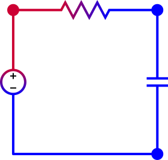

Keegan Mehall
Below are a few of my programming projects. They are works in progress and may not be fully compatable with all web browsers. They have been tested in Firefox and Chrome.
RC Circuit Simulation
A simulation of the behavior of an RC (Resistor-Capacitor) circuit. Values for resistance and capacitance can be changed by clicking on the components. The voltage source (incorrectly shown as a battery) can output signals according to three settings selected in the dropdown menu: 'constant', which makes the voltage constant for all time; 'node voltage', which sets the voltage constant for all future time (and therefore can show step responses); and 'sinusoidal', which outputs a sinusoidal signal with time. For 'constant' and 'node voltage', the voltage can be set by clicking on the battery. All updates are immediately shown on the graph.
Dots Game
A puzzle game based on the traveling salesman problem. Users find the shortest path through all dots starting at thee green dot and ending with the red dot, by clicking or touching the dots. (This differs from the traditional traveling salesman problem, in which the route must return to the start point.) The length of the user's path is shown by the blue bar on the right side, relative to the optimal path shown by the green line.
EquationExplorer

An equation grapher, originally built by Kevin Mehall, supporting implicit and parametric equations and vector fields. In one of my first programming projects, I added the parametric grapher and later combined all three graph types, which were on separate pages, allowing comparisons between them.